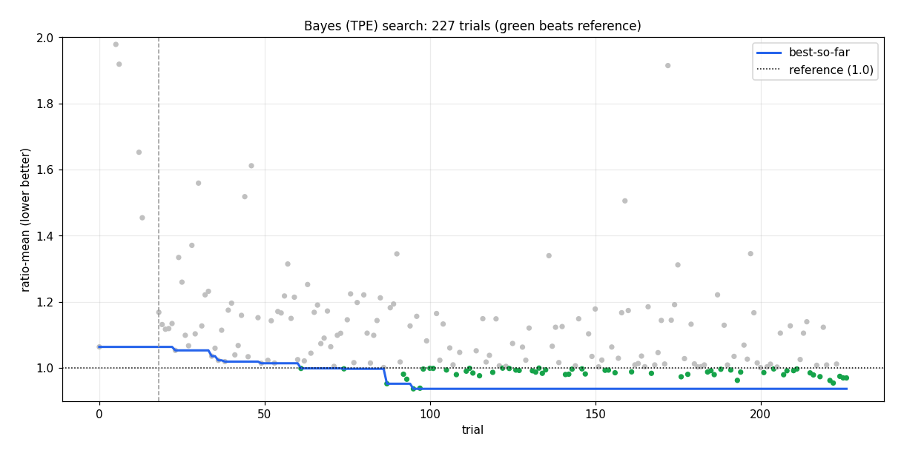

A differentiable global placer + greedy detailed placement, tuned by Bayesian search. Proxy cost = 1.0·wirelength + 0.5·density + 0.5·congestion (lower is better; zero macro overlap required).
0.692 mean ratio vs reference (−31%) 1.0155 abs. avg over 17 0 overlaps, all 17
Starting from the placement each benchmark ships with (avg proxy 1.477), our pipeline reaches an average proxy of 1.0155 across all 17 designs — a 31% improvement — with zero overlaps everywhere. On the easiest designs we dip below the current leaderboard leader's average (ibm01 0.78, ibm09 0.80 vs 0.9507); the hard, congestion-bound designs (ibm08/17/18) keep our overall average ~7% above the top score.
Each animation below replays an actual winning run. Three panels: the reference placement shipped with the benchmark; our differentiable global stage animating from a random spread to a clustered layout (then legalized and greedy-polished); and the true proxy cost per frame on a log axis, where the dashed red line is the reference score — watch the curve dive below it.


The pipeline has three stages. The first is continuous and gradient-based; the last is discrete and operates directly on the true score.
Macro centers are free 2-D coordinates optimized by gradient descent (Adam) against a smooth surrogate of the proxy — the key trick is that the real objective (Manhattan wirelength, top-k density, overlap) is non-differentiable, so we replace each term with a differentiable relaxation:
gamma grows.Qualitatively the optimization runs a homotopy schedule: it starts loose and weakly-constrained,
lets the netlist's attractive forces gather connected macros, and only in the final phase ramps the
wirelength and density weights up sharply to snap the layout into a compact, legal-ish arrangement. This
"spread first, tighten late" order (controlled by ramp_p≈3.8) avoids the local minima that a
fully-on objective falls into from the first step.
A Jacobi push-apart pass followed by a strictly-gated cleanup removes all hard-macro overlap, moving macros as little as possible. Output: a zero-overlap placement on every benchmark.
The differentiable stage optimizes a surrogate; the legalizer then perturbs it. A greedy local search closes that gap by proposing single-macro moves and accepting only those that lower the true proxy (evaluated incrementally for speed). It touches soft macros only, so hard-macro legality is preserved. This stage does most of the absolute-quality work.
Random-init variance is large, so each design is placed from many seeds and the best-scoring result is kept — worth ~6% on its own (see below).
All continuous weights and schedules were tuned by Bayesian optimization (Tree-structured Parzen Estimator, ~230 trials) on three representative designs (ibm01/13/17, easy/medium/hard), minimizing the mean ratio-to-reference so no single design dominates. The winning configuration:
| parameter | value | meaning |
|---|---|---|
| gamma | 9.68 | wirelength sharpness (high → close to true HPWL) |
| ramp_p | 3.79 | back-loaded schedule exponent (spread early, tighten late) |
| lam_d_end / ratio | 0.078 / 0.041 | final density weight; starts at ~4% of it |
| lam_wl0 | 0.58 | wirelength starts at 58% strength |
| target | 0.71 | density target fill |
| tau_d | 0.11 | soft-top-k density mask width |
| lr / iters | 0.27 / 5000 | Adam step size / gradient steps |
| density mode | overflow | chosen over electrostatic-FFT |
| congestion | off | RUDY surrogate hurt more than it helped |
| in-loss legalize | off | external legalizer only |
ratio = ours / reference; <1 beats the shipped placement. †=used for tuning; all others are held out.
| design | reference | ours | ratio | design | reference | ours | ratio |
|---|---|---|---|---|---|---|---|
| ibm01† | 1.039 | 0.784 | 0.755 | ibm11 | 1.214 | 0.858 | 0.707 |
| ibm02 | 1.566 | 0.996 | 0.636 | ibm12 | 1.625 | 1.186 | 0.730 |
| ibm03 | 1.325 | 0.941 | 0.710 | ibm13† | 1.385 | 0.906 | 0.654 |
| ibm04 | 1.314 | 0.902 | 0.687 | ibm14 | 1.594 | 1.094 | 0.687 |
| ibm06 | 1.658 | 1.107 | 0.668 | ibm15 | 1.603 | 1.122 | 0.700 |
| ibm07 | 1.476 | 0.993 | 0.673 | ibm16 | 1.491 | 1.102 | 0.739 |
| ibm08 | 1.847 | 1.057 | 0.573 | ibm17† | 1.739 | 1.205 | 0.693 |
| ibm09 | 1.110 | 0.797 | 0.717 | ibm18 | 1.790 | 1.185 | 0.662 |
| ibm10 | 1.337 | 1.027 | 0.768 | AVG | 1.477 | 1.0155 | 0.692 |
We beat the reference on all 17. Crucially, the 14 held-out designs (mean ratio 0.71) do as well as the 3 tuning designs — the tuned configuration generalizes and is not overfit to ibm01/13/17.
The same three-panel view across the design space — hard macros as rectangles (color = area, log scale), soft cell-clusters as light dots. In every case the reference (left) scatters macros with large dead regions while our result packs them into a compact, connected arrangement, and the proxy curve (right) dives below the reference line. ibm09 (medium, 0.797), ibm17 (large, congestion-bound, 1.205), ibm18 (large, 1.185).


Single-seed scores carry ~2% noise, larger than the gap between good configurations. Ranking configs by a single seed is therefore unreliable — the apparent best (trial 95) was simply a lucky draw. Re-scoring the top five at best-of-16 reshuffled the order and promoted a configuration that had ranked only 5th, while lowering the score by ~6%. This is why the final pick is made under multi-seed evaluation, not by the search's single-seed leader.

Explored and measured, but they did not improve the final result, so they are not in the solution:
All ~230 Bayesian-optimization trials. Green = beats the reference. Best found at trial 95 by single-seed (later corrected by best-of-16, above); the search plateaus once config differences fall below the seed-noise floor.

The result is a general, differentiable-loss placer whose configuration transfers across designs and sets a solid mid-leaderboard score (1.0155). The differentiable stage supplies a good starting basin (6.2% better than greedy-from-reference), but greedy detailed placement does most of the absolute-quality work. The remaining ~7% to the top score is not a congestion-modeling problem: adding an explicit congestion term to the global loss, and directing greedy toward congested cells, both proved neutral-to-negative in paired tests (greedy already minimizes the true congestion directly). Closing it needs a detailed placer that makes coordinated, multi-cell moves, not further tuning — see the repository appendix.